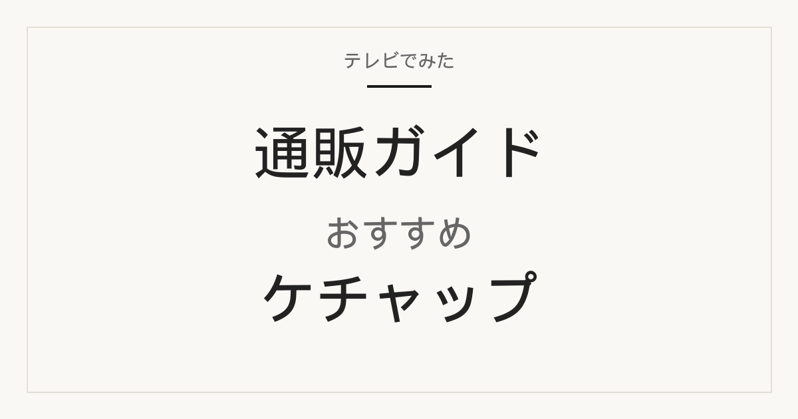

この記事には広告・アフィリエイトリンクが含まれる場合があります。

テレビで出た1本も良いけれど、同じ棚のほかも見てから決めたい、というときの記事です。先に放送で出た掲載商品、すぐ下に同じカテゴリのほかの通販候補を置いています。
番組の順位と楽天の売れ筋は別物です。下の比較は、当サイト掲載の通販候補をもとに整理（楽天公式総合ランキングの複製ではない）。「楽天1位」ではありません。価格・レビューは2026年9月19日に各販売ページで確認した時点の値です。リンクはすでに当サイトで使っている楽天の商品ページだけです。
サタデープラス 2026年9月19日回で、当サイトにも通販リンクがあるケチャップです。ここは番組で紹介された事実です。楽天のレビュー件数順でも、公式の楽天総合ランキングでもありません。
放送回の採点とコメントは 9月19日の記事 にあります。
放送で紹介（番組の総合1位。楽天1位ではない）
高橋ソース カントリーハーヴェスト
カントリーハーヴェスト 有機トマトケチャップ 500g

用途：そのままパンや野菜に付ける、卵料理の添え。有機原料の表示を優先したい人向けです。
選び方：トマトだけでなく玉ねぎ・砂糖・酢・香辛料まで有機、と番組で紹介されました。通販は単品500gと2本セットの出品が分かれます。下のリンクはレビューが残っている単品です。
注意：704円（楽天24／2026年9月19日 06:50）。定番500gより1本の表示価格は高めです。番組順位は通販の人気件数とは別です。
楽天のレビュー 34件・平均 4.94（楽天24／2026年9月19日 06:50時点 704円）
楽天市場で商品情報を見る
放送で紹介（番組順位＝楽天順位ではない）
ハインツ
ハインツ トマトケチャップ 逆さボトル 460g

用途：ホットドッグ、フライドポテト、ハンバーグに足すテーブルソース。逆さボトルなので、残り少なくなってからも出しやすい形です。
選び方：甘みよりスパイスを先に感じたいときに向きます。日本の定番チューブと比べて酸味と香辛料のバランスが違う、という声がレビューに多いタイプです。
注意：460gで571円（楽天24／2026年9月19日 06:50）。ピクルス味のパウチは別商品です。レビュー件数が多い出品でも、それを番組順位や楽天公式1位とは書いていません。
楽天のレビュー 57件・平均 4.47（楽天24／2026年9月19日 06:50時点 571円）
楽天市場で商品情報を見る
放送で紹介（コストの項目。楽天1位ではない）
キッコーマン デルモンテ
デルモンテ トマトケチャップ チューブ 500g

用途：卵かけご飯、オムライス、ナポリタン。日本のテーブルソースとして使いやすい定番です。
選び方：毎日使う1本を抑えめの価格で揃えたいとき。確認時点 389円、500g。リコピンリッチは別商品で、表示価格は高めです。
注意：この出品のレビューは4件です。番組のコスト評価と、通販のレビュー件数は別の数字です。
楽天のレビュー 4件・平均 4.5（ココデカウ／2026年9月19日 06:50時点 389円）
楽天市場で商品情報を見る
放送で紹介（炒めの項目。楽天1位ではない）
横濱屋本舗 清水屋
清水屋 有機トマトケチャップ 300g

用途：炒め物や卵料理など、香辛料の香りを足したいとき。300gなので、まずは有機を試す一本にも向きます。
選び方：国産の有機。カントリーハーヴェスト（500g）より容量は少なく、1グラムあたりは上の帯です。ナツメグの印象がレビューでも触れられやすいタイプです。
注意：624円（にっぽん津々浦々／2026年9月19日 08:25）。300g×複数本のセット出品があるので、単品かセットかを購入画面で確認してください。
楽天のレビュー 13件・平均 4.77（にっぽん津々浦々／2026年9月19日 08:25時点 624円）
楽天市場で商品情報を見る
放送で紹介（卵の項目。楽天1位ではない）
ジロロモーニ
ジロロモーニ 有機トマトケチャップ 300g

用途：卵料理の添え、有機を試す300g。
選び方：有機のなかではカントリーハーヴェストより容量が少なく、価格は中ほどです。番組の「卵との相性」は通販レビューの並びとは別の評価です。
注意：534円（楽天24／2026年9月19日 08:20）。300gなので、500g定番と1グラムあたりで比べてください。
楽天のレビュー 12件・平均 4.5（楽天24／2026年9月19日 08:20時点 534円）
楽天市場で商品情報を見る
他の候補も見る ↓
上は放送で出た掲載商品です。ここからは、同じケチャップとして当サイトにリンクがあるほかの通販候補です。並べ方は楽天側の信号（レビュー件数・平均・価格帯）だけです。番組の順位を、こちらの番号には使っていません。
当サイト掲載の通販候補をもとに整理（楽天公式総合ランキングの複製ではない）。掲載順は確認時点のレビュー件数が多い順で、公式の「楽天1位」ではありません。
整理の基準
- レビュー件数（出品ページ単位）
- レビュー平均点
- 確認時点の表示価格と内容量
件数が多いほど「その出品を買った人の声が残っている」という意味であり、味の順位ではありません。平均点が高くても件数が1〜2件なら、まだ参考にしにくいです。
レビュー件数・平均・価格は2026年9月19日 06:50（イカリは同日 08:12）に各楽天出品ページで確認。この表に放送で出た商品は入れていません。番組順位と混ぜていません。
ほかの候補・レビュー件数順 1（51件・公式の楽天1位ではない）
カゴメ
カゴメ トマトケチャップ 500g

用途：卵かけご飯、オムライス、ナポリタン、ウインナー。日本の食卓でいちばん想像しやすい使い方に合わせた定番です。
選び方：「いつもの味」を通販でも揃えたいとき。500gで375円（よろずやマルシェ／2026年9月19日 06:50）と、この比較のなかでは1本あたりが抑えめです。ハーフ（塩分・糖質カット）が欲しい場合は別商品です。
注意：店によって単品と複数本セットが混在します。レビュー51件はこの出品ページの件数で、カゴメ全体の人気件数ではありません。
楽天のレビュー 51件・平均 4.65（よろずやマルシェ／2026年9月19日 06:50時点 375円）
楽天市場で商品情報を見る
ほかの候補・レビュー件数順 2（19件・公式の楽天1位ではない）
デルモンテ
デルモンテ リコピンリッチ トマトケチャップ 485g

用途：いつものケチャップを、リコピン量の表示がある一本に替えたいとき。使い方自体は定番チューブと同じです。
選び方：上の放送枠にあるデルモンテ通常500g（389円）より表示価格は高く、レビューは19件あります。通常のデルモンテでよいなら、放送で出た500gを見てください。
注意：485gで519円（楽天24／2026年9月19日 06:50）。栄養表示は販売ページとメーカー表示を優先し、この記事では効果を断定しません。
楽天のレビュー 19件・平均 4.79（楽天24／2026年9月19日 06:50時点 519円）
楽天市場で商品情報を見る
ほかの候補・価格を抑えたい
イカリソース
特級トマトケチャップ 500g

用途：まず安く1本試す。ソースメーカーのケチャップです。
選び方：確認時点 278円と、掲載候補のなかでは表示価格が低い側です。レビューは1件のみなので、件数ではカゴメの下になります。
注意：安さだけで選ぶなら送料込みの総額を見てください。1本だけだと送料のほうが大きい店があります。
楽天のレビュー 1件・平均 5.0（くまの中谷商店／2026年9月19日 08:12時点 278円）
楽天市場で商品情報を見る
ほかの候補・塩分・糖質を抑えたい
カゴメ
カゴメ トマトケチャップ ハーフ 275g

用途：塩分・糖質・カロリーを抑えたいときのテーブルソース。
選び方：商品名に50%カットとあります。275g・359円。通常のカゴメ500gとは味も容量も別です。
注意：確認時点のレビューは0件でした。1グラムあたりで通常の500gと比べてください。
楽天のレビュー 0件（大将もビックリ!SCB／2026年9月19日 06:50時点 359円）
楽天市場で商品情報を見る
価格帯
放送で出たものと、ほかの候補を同じ表に載せています。並びは価格帯だけで、番組順位でも楽天公式順位でもありません。送料は含みません。
ここから先はケチャップ本体ではありません。使い道として、すでに当サイトで扱っている通販候補だけを置いています。
1本買ったあと、最初に作ることが多いのはオムライスです。ケチャップの差は、卵とチキンライスが揃ってから出ます。家で作るか、店の冷凍を取り寄せるか、先に決めてください。
家で作る
卵かけご飯セット（太陽卵10個2パック×卵かけご飯専用醤油）

楽天のレビュー 35件・平均 4.49（2026年9月19日 05:45時点 2,780円）
楽天市場で商品情報を見る
日本食研 チキンライスの素 600g

楽天のレビュー 13件・平均 4.92（2026年9月19日 05:45時点 1,650円）
楽天市場で商品情報を見る
作らずに取り寄せる
ポムの樹のオムライス ポムオム 5袋

楽天のレビュー 10件・平均 4.3（2026年9月19日 05:45時点 3,200円）
楽天市場で商品情報を見る
北極星オムライス 5食

楽天のレビュー 7件・平均 3.71（2026年9月19日 05:45時点 5,508円）
楽天市場で商品情報を見る
よくある質問
番組の1位と、下の通販候補の並びは同じですか？
同じではありません。上の「放送で出たもの」は番組で紹介された事実です。下の並びは当サイト掲載の通販候補を、確認時点の楽天レビュー件数で整理したもので、楽天公式総合ランキングでも番組順位でもありません。
これは楽天公式の総合ランキングですか？
違います。楽天公式の総合ランキングを複製したものではありません。
毎日使うならどれを選べばよい？
放送で出た定番ならデルモンテやハインツ、ほかの候補ならカゴメの500gから見るのが分かりやすいです。味の好みは店頭の小容量で確かめてから通販でまとめ買いする方法もあります。
有機と通常のケチャップは何が違う？
有機は原料の表記と1本あたりの価格が通常の定番より高めになりやすいです。カントリーハーヴェスト、清水屋、ジロロモーニが有機側です。甘み・酸味・香辛料の出方も定番とは別物として選んでください。
容量や入数が違うときはどう比べる？
通販は単品と2本セット、300gと500gが混在します。ページの内容量と入数を先に確認し、1本あたりで見てください。レビュー件数は出品ページ単位なので、セット商品の件数を単品の人気と同一視しないでください。
送料はかかりますか？
店と購入金額で変わります。1本だけだと送料のほうが大きくなることがあります。購入前に販売ページの送料条件を確認してください。
出典・確認方法
公開：2026年9月19日／最終更新：2026年9月19日。番組順位と楽天の並びは別物です。楽天公式総合ランキングの複製ではありません。